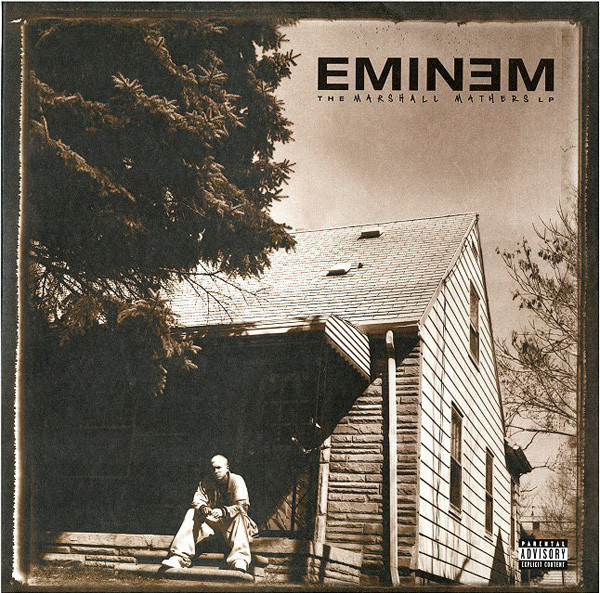

Artista: EMINEM
Album: The Marshal Mathers
Genero: Rap
Fecha de lanzamiento: 23 de Mayo de 2000
Canciones:
- 1. Public Service Announcement 2000
- 2. Kill You
- 3. Stan
- 4. Paul - Skit
- 5. Who Knew
- 6. Steve Berman
- 7. The Way I Am
- 8. The Real Slim Shady
- 9. Remember Me?
- 10. I'm Back
- 11. Marshal Mathers
- 12. Ken Kaniff - Skip
- 13. Drug Ballad
- 14. Amityville
- 15. Bitch Please II
- 16. Kim
- 17. Under The Influence
- 18. Criminal